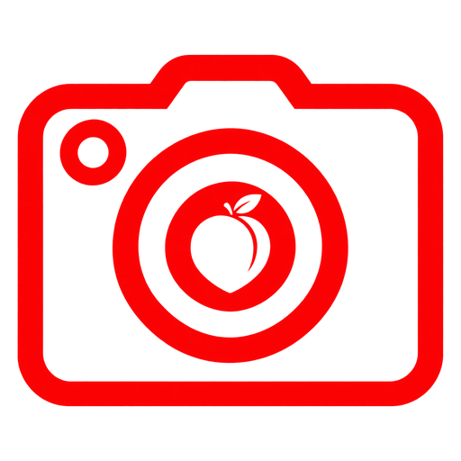

ButShare
Fluidez — jogos e vídeos (60 fps)
Nitidez — texto e código (30 fps)
Áudio do PC (sem o Discord)
Compartilhar tela
🔄 Trocar tela
Parar
0 assistindo
Copiar link
Escolha o modo e clique em compartilhar. Depois é só mandar o link pros seus amigos.
🔈 Áudio sem o Discord: escolha uma
Aba
no seletor (só o som dela vai junto). Na
Tela inteira
, o áudio do sistema leva tudo do PC, até as vozes do Discord.
100%
Conectando…
O que você quer compartilhar?
Cancelar
Telas
Janelas